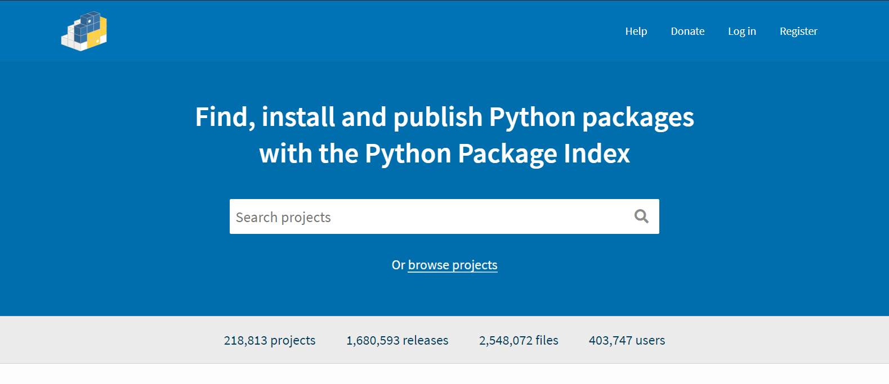

pythonライブラリのwhlからのインストール
使うとき
プロキシが上手く通らない場合
古いバージョン等をインストールしたい場合
(pipコマンドからでも＝でバージョンは指定できる)
ダウンロード
[PyPI](https://pypi.org/)にアクセス

インストールしたいファイルの検索
.png)
.png)
.png)
popでインストールできるといわれているが無視
.png)
Download filesを選択
.png)
pythonのバージョン、OSのバージョンの確認をして選択
ダウンロードした.whlは任意の場所に置く
インストール
cd 任意の場所
pip install --no-deps ファイル名
または
pip3install --no-deps ファイル名
必要に応じてsudoを付ける
注意
関連ライブラリはインストールしないので別途必要な場合が多い
ロードスターホイール考察
狙ってるサイズ
15 F）6.5J-15+38 R）6.5J-15+38 F）195/55 R）195/55
16 F）7J-16+38 R）7J-16+38 F）205/45 R）205/45
17 F）7J-17+38 R）7J-17+38 F）205/40 R）205/40
ワイトレ入れればええんやね？
腐食が激しい
ホイールの塗り直しも考える？
https://www.croooober.com/item/cparts/00000213/Rim-%26-Tire-Sets/11333444
https://www.croooober.com/item/cparts/00000189/Rim-%26-Tire-Sets/11300563
https://www.croooober.com/item/cparts/00000189/Rim-%26-Tire-Sets/11300563
https://www.croooober.com/item/cparts/00000118/Rim-%26-Tire-Sets/11138505
https://www.croooober.com/item/cparts/00000190/Rim-%26-Tire-Sets/11215971
ロードスターNB8C(NB1)
平成10年式 マツダ ロードスター
平成1年にデビューしたユーノスロードスターの後継として発売された通称NBロードスターは
初代の基本設計を活かしつつ、正統進化したライトウエイトスポーツとして発売された。
搭載されるエンジンはB6,BPと形式こそ先代モデルと共通だが着実にパワーアップをしていた。
デザインは先代のリトラクタブルライトから固定式のヘッドライトに変更した点が大きいが
それ以外も多くの点が変更されていた。このデザインはアメリカの案が採用されており
上から見た形がコークボトルラインの様になっているのもポイントの一つである。
乗り心地に関してはNAでは剛性の不足が上がっていたがNBは改善されておりNAに比べてより成熟された車体構成になっていた。
vespa締め付けトルク一覧(備忘録)
エンジン
| コイルプレート | 0.3~0.5 |
| キックスターターレバー | 2.3~2.6 |
| フライホイール | 6.0~6.5 |
| ブレーキパネル | 1.7~2.2 |
| クランクケース合わせ | 1.7=2.2 |
| 駆動ギヤー | 5.0~5.5 |
ステアリング
| ステアリングリング | 0.6~0.7 |
| ステアリングロック | 5.0~6.0 |
| ダンパー下部 | 2.0~3.0 |
| メーターギヤー | 4.5-5.0 |
| ホイール外周ナット | 2.0~2.7 |
| ホイール・ドラム | 4.0~4.5 |
リアブレーキパッド交換(備忘録)
必要工具
21,14,10mmソケット
10mmメガネ等
4ミリの六角
パーツクリーナー
グリス
手順
ジャッキアップ、馬に乗せ、タイヤを外す
14mmで止まっているサイドブレーキを外す
10mmで止まっているキャリパー下部のスライドピンを緩める(左側はメガネ使用推奨)
キャリパーが外れる
パッドの取り外し(ピンは上M下Wの形)
サイドブレーキ横の14mmを外す
その中にアジャスターギアが入っているので4mmの六角で反時計回りに緩める
パッドを組付け、各部にグリスを塗る
キャリパーをはめる
アジャスターギアを時計回りに回しきる
そこから1/3戻した位置が標準位置になる
各部のゆるみ、ガタ等がないか確認
タイヤ取付、馬を外しジャッキからおろす
整備記録（やったこと）
2020年1月3日クイックリリースボス取付（ロードスター）
2020年1月5日チャンバー取付[¥5,00](vma2t)
2020年1月21日Fブレーキパッド交換[¥5280](6764.5km)（ロードスター）
2020年1月23日エンジンオイル交換7.5w-40[¥4,446](6909.4km)(ロードスター)
2020年1月25日ステアリングポジション変更(ロードスター)
2020年2月9日リアブレーキパッド[¥7,040]、左リアブレーキキャリパー交換（中古品)(6988.0km）（ロードスター）
2020年2月11日エアクリーナー[¥3,588]、ワイパー(ゴム・ブレード)交換[¥]、リアブレーキキャリパーグリスアップ、サイドブレーキ調整(6988.8km)(ロードスター)
2020年2月15日ブレーキフルード交換[¥5,500]、アンダーコート施工[¥7,000]スパークプラグ交換[¥1,784](km)
vespa125primaveraについて

私は2台のベスパを所有していて、その中でも特に手を駆けているのがvespa 125 primavera(vma2t)です
このベスパは1969年より製造が始まり後継のET3が発売された後も併売されていたモデルです。ET3がCDI点火なのに対し
primaveraはポイント点火方式である点を初め、チャンバー形状や最高出力等も違うモデルになっています。
購入動機としては
古いベスパほしいなー
125ET3ってのがあるのか
ET3じゃない125ってなんかレアっぽくね？
というなんとも単純な動機でしたが、今になって思うとET3の再生産モデルをおとなしく
買っておくべきだったと後悔しております